Quien administra el sistema: usuarios, vehículos, reglas, notificaciones y reportes.
El administrador es quien decide quién entra, cuándo, y qué pasa cuando algo se sale de lo normal. No opera el portón: configura las reglas con las que el sistema opera solo.
Este manual cubre el panel completo. Para el uso diario del monitor está el Manual del Operador; para la instalación y las cámaras, el Manual del Instalador.
Antes de tocar nada conviene entender cómo se relacionan las cosas. Todo el sistema se apoya en esta cadena:
Unidad (lote / casa / oficina)
└── Usuario (residente, empleado, visitante)
└── Credencial (matrícula, tarjeta RFID, rostro)
└── Grupo de acceso (qué puertas, en qué horario)El error más común al empezar es cargar matrículas sueltas sin usuario ni unidad. Funciona, pero el día que hay que buscar "todos los vehículos de la casa 42" no hay forma. Cargá siempre la cadena completa.
| Rol | Puede |
|---|---|
| Superadministrador | Todo, incluida la configuración del sistema y otros administradores |
| Administrador | Usuarios, vehículos, reglas, reportes. No cambia el modo ni la configuración crítica |
| Operador | Ver el monitor, el historial y registrar. No modifica configuración |
| Guardia | La consola del guardia y la tablet |
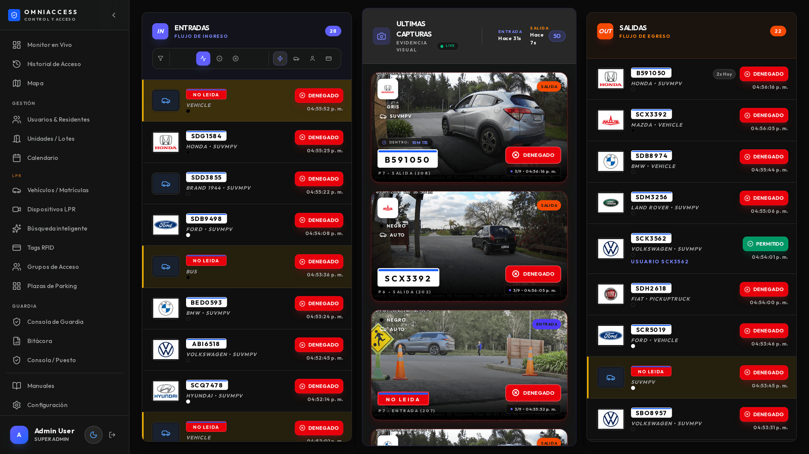
Muestra el estado del sistema de un vistazo: accesos del día, vehículos adentro, dispositivos en línea y las alertas activas.
Los números se actualizan en vivo por websocket. Si dejan de moverse durante varios minutos con tráfico en los portones, revisá el estado de los dispositivos.
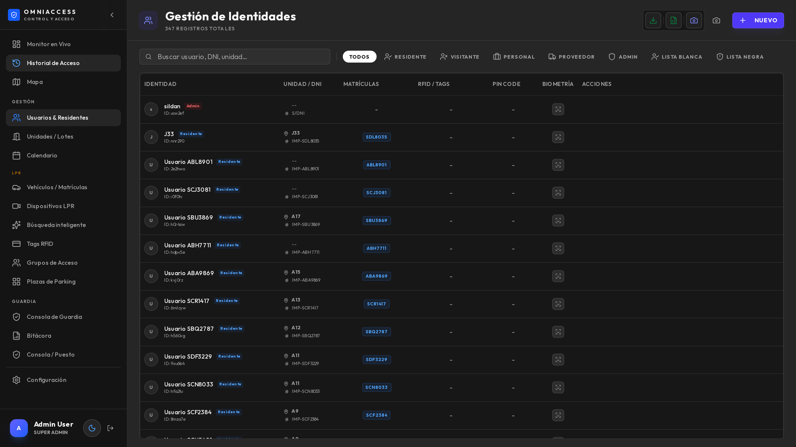
Es el registro de todas las personas del predio: residentes, empleados, proveedores frecuentes.
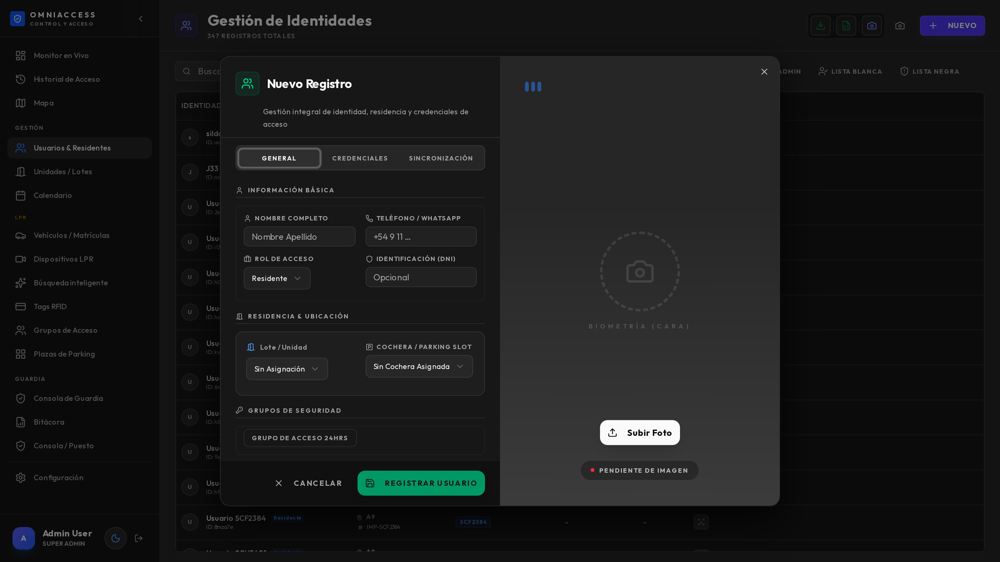
El alta tiene efecto inmediato: el vehículo que se acaba de cargar ya entra en la próxima lectura, sin reiniciar nada.
La forma más práctica de cargar un vehículo nuevo es desde donde apareció: en el monitor o en la ficha del evento, el botón Registrar abre el alta con la matrícula ya escrita. Evita errores de tipeo, que son la causa número uno de "no me abre".
| Estado | Efecto |
|---|---|
| Activo | Sus credenciales funcionan |
| Suspendido | Sus credenciales son rechazadas, pero el registro se conserva |
| Eliminado | Se borra; los eventos históricos quedan (con la matrícula, sin el nombre) |
Para una baja temporal (un residente que se muda por unos meses) usá suspendido, no eliminado: conserva el historial y la relación con la unidad.
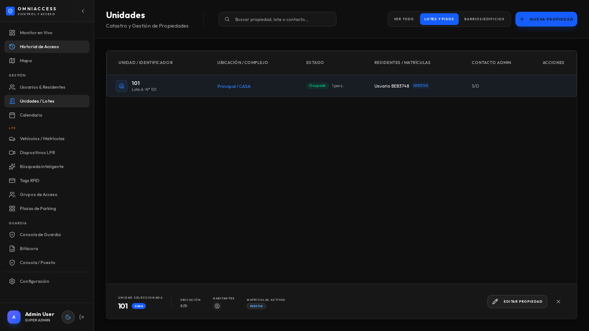
Las unidades son la estructura del predio: lotes, casas, oficinas, apartamentos. Cada usuario pertenece a una.
Sirven para tres cosas concretas:
Se pueden importar en lote desde una planilla al iniciar el sistema.
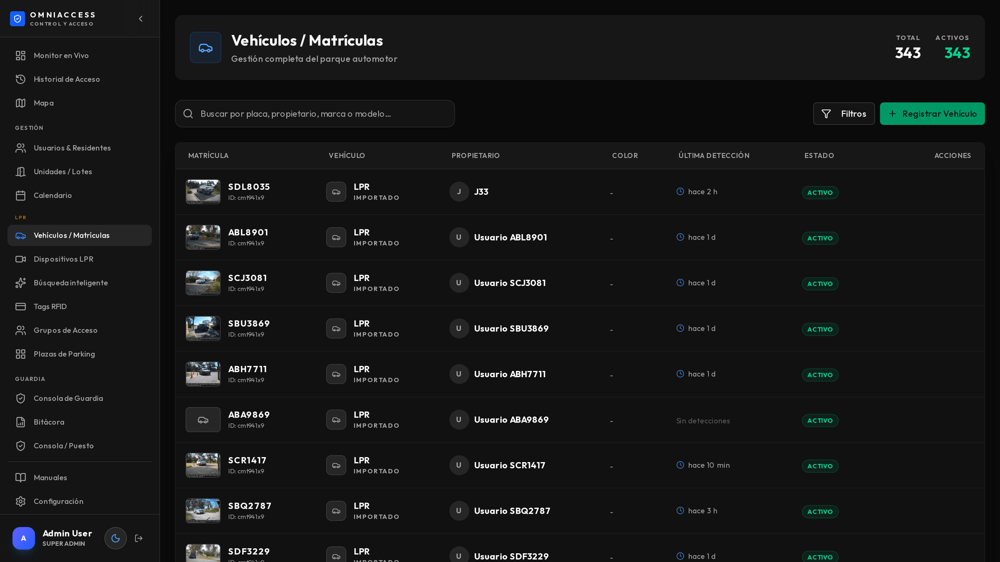
Es la vista centrada en el vehículo, no en la persona. Cada fila muestra la matrícula, el propietario, la unidad, y la última vez que fue detectado con su foto.
Al abrir una fila se ve el historial completo de ese vehículo, con sus fotos y accesos.
Si una matrícula aparece dos veces con distinto propietario, el sistema usa la más reciente. Revisá los duplicados: casi siempre son un auto que cambió de dueño dentro del predio y quedó cargado dos veces.
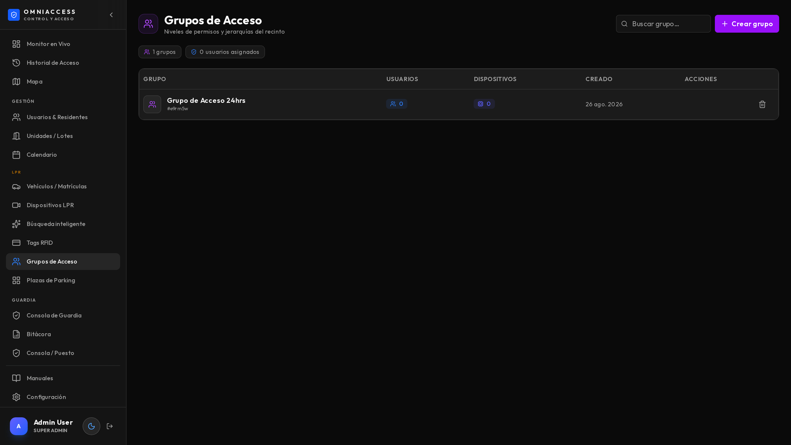
Un grupo de acceso responde a dos preguntas: por dónde puede pasar y cuándo.
| Grupo | Dispositivos | Horario |
|---|---|---|
| Residentes | Todos | 24/7 |
| Personal de servicio | Portón principal | Lunes a viernes, 7 a 19 |
| Proveedores | Portón de servicio | Lunes a sábado, 8 a 18 |
| Obra | Portón de servicio | Lunes a viernes, 7 a 17, con fecha de vencimiento |
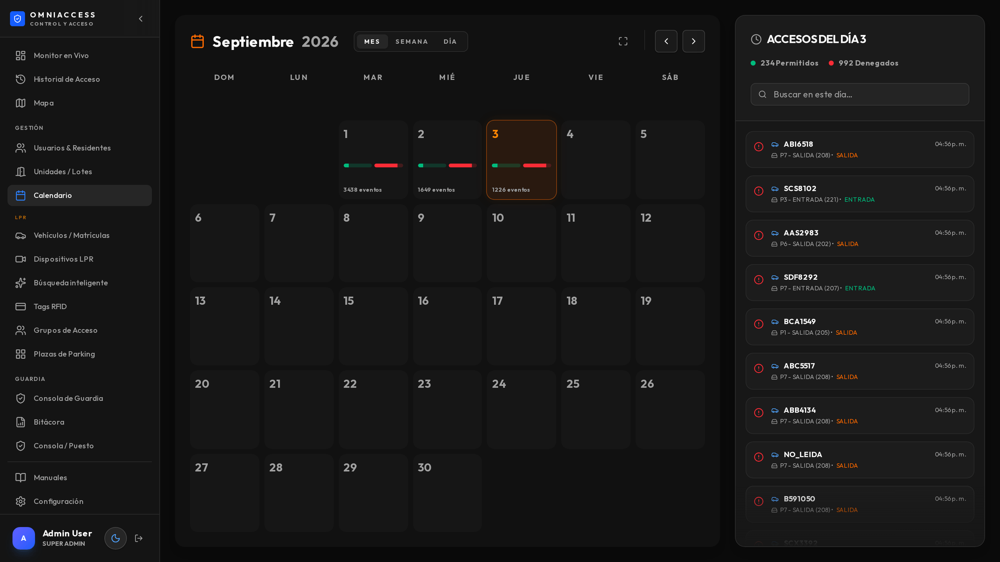
El calendario define feriados y excepciones: días en los que los horarios normales no aplican. Es lo que evita tener que reconfigurar los grupos cada fin de semana largo.
Un cambio de horario tiene efecto en la siguiente lectura. No hace falta reiniciar ni esperar: probalo con un vehículo del grupo modificado.
Sirve para marcar matrículas que requieren atención: vehículos buscados, prohibidos o VIP.
Se accede desde el monitor (icono de vigilancia) o desde la ficha de cualquier evento con el botón Lista negra.
| Categoría | Efecto al detectarse |
|---|---|
| Lista negra | Alerta sonora, tarjeta resaltada en rojo, notificación al supervisor |
| Lista blanca | Se marca como autorizado aunque no tenga usuario asociado |
| Búsqueda | Avisa cuando aparece, sin bloquear |
La lista se sincroniza con los roles de usuario: si un usuario tiene rol de bloqueado, sus matrículas figuran automáticamente en la lista negra sin cargarlas dos veces.
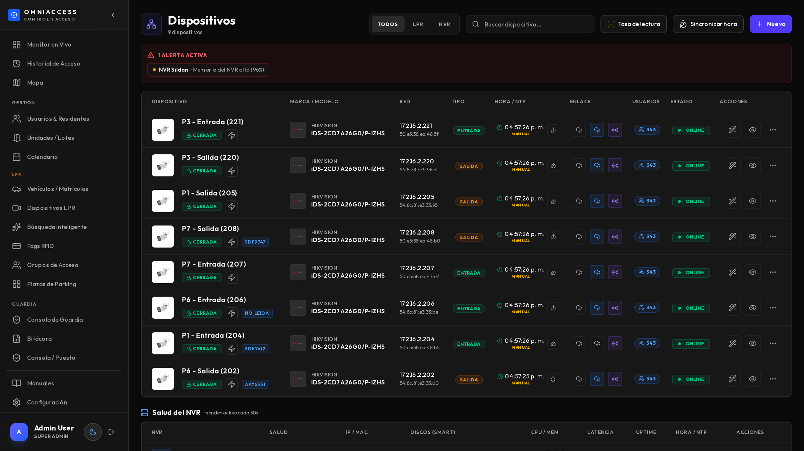
Es el inventario de cámaras y grabadores, con su estado real.
| Columna | Qué significa |
|---|---|
| Estado | Verde: responde. Rojo: sin respuesta (dos sondeos seguidos) |
| Latencia | Cuánto tarda en contestar. Más de 500 ms sostenidos indica problema de red |
| Hora / NTP | Desfase del reloj de la cámara contra el servidor |
| Dirección | Si es de entrada o de salida |
| Canal NVR | A qué canal del grabador corresponde (para la grabación) |
El desfase de reloj es el problema silencioso más frecuente. Una cámara con la hora corrida genera eventos con hora incorrecta y la grabación no coincide. El botón de sincronizar hora lo resuelve en un clic.
Al agregar un dispositivo Hikvision, el sistema consulta la cámara y completa modelo, MAC y firmware solo. Solo hay que indicar nombre, IP, credenciales y dirección (entrada o salida).
Para el detalle de calibración ANPR y mapeo de canales, ver el Manual del Instalador.
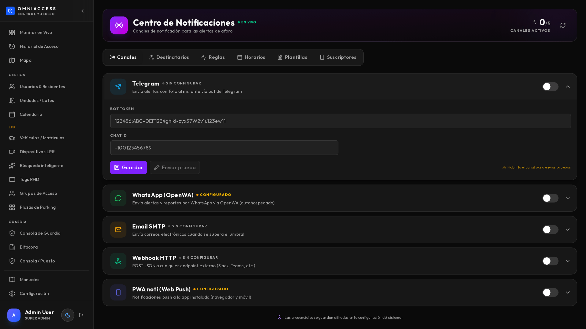
Define qué avisa, a quién y por dónde.
| Canal | Requiere | Entrega |
|---|---|---|
| Telegram | Bot configurado | Inmediata, con foto o video |
| Pasarela OpenWA en la red | Inmediata, con imagen o video | |
| Correo | Servidor SMTP | Según el servidor, típicamente segundos |
| Push | Que el destinatario haya instalado la PWA | Inmediata |
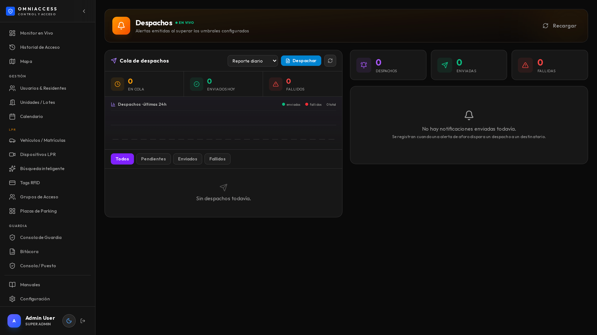
Muestra la cola de envíos pendientes (izquierda) y lo efectivamente enviado (derecha), con destinatario, canal y contenido. Es donde se verifica que un aviso salió.
Un aviso con foto sale en 2 a 5 segundos. Con clip de video, entre 10 y 20 segundos (hay que generar el clip). Si la cola crece y no baja, revisá que el servicio de despacho esté corriendo.
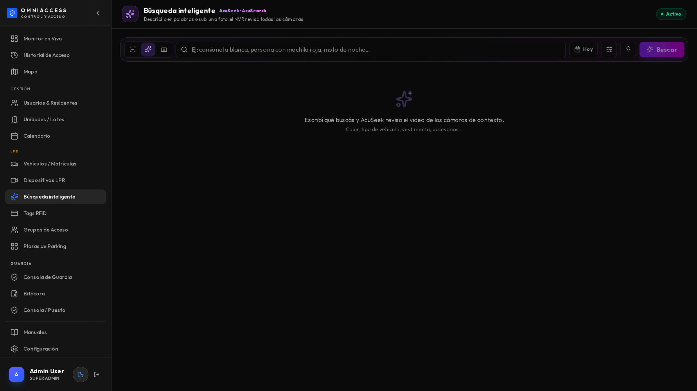
Tiene tres modos. El detalle de uso está en el Manual del Operador; lo que el administrador necesita saber es qué cubre cada uno:
| Modo | Fuente | Cobertura |
|---|---|---|
| Accesos | Base de datos propia | Todas las cámaras de matrículas |
| Por texto | Índice del grabador | Solo cámaras de contexto |
| Por imagen | Índice del grabador | Solo cámaras de contexto |
Las cámaras que leen matrículas no alimentan la búsqueda del grabador: en esos equipos el motor de matrículas y el de análisis de video son excluyentes. Por eso existe el modo Accesos, que cubre los portones con la base propia. Si se necesita búsqueda visual en un acceso, hay que instalar una segunda cámara de contexto.
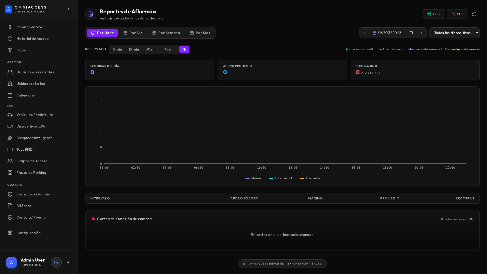
Genera Excel y PDF con la marca del cliente. Los reportes habituales:
El diseño de la portada (logo, colores, firmas) se configura en Configuración → Branding → Reportes.
La configuración está agrupada en cuatro secciones.
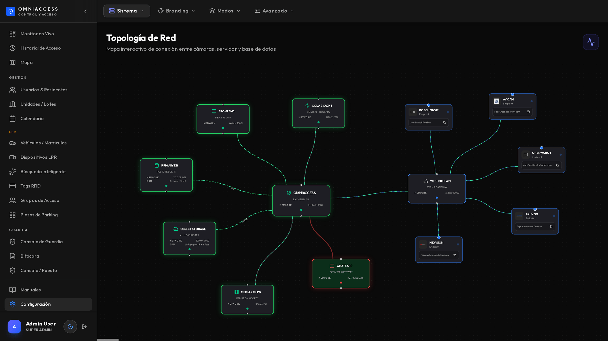
Cambiar el modo del sistema reconfigura el menú completo y oculta módulos. No se pierden datos, pero conviene hacerlo fuera de horario.
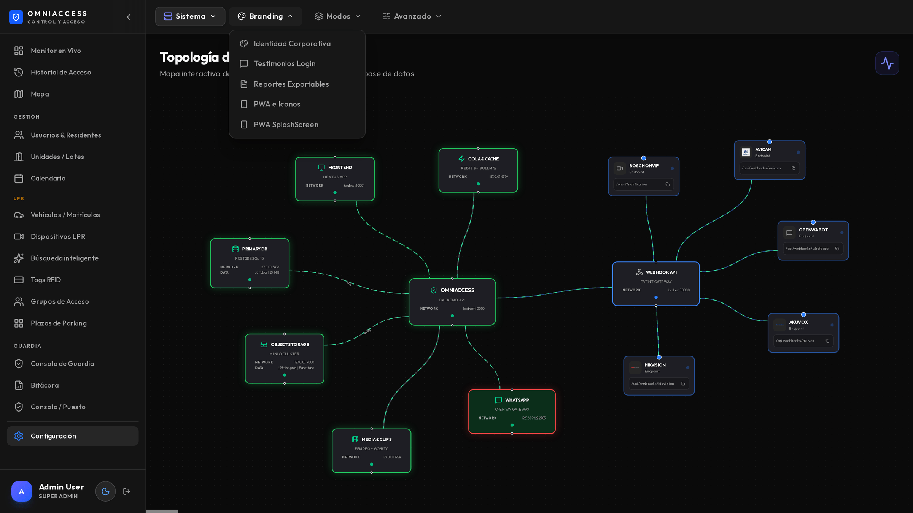
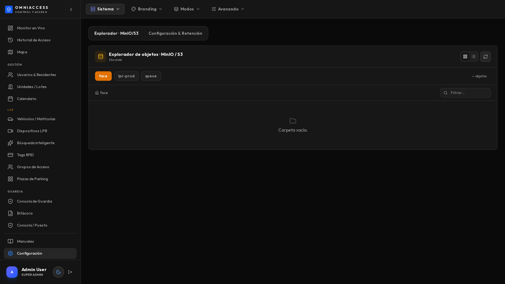
Define cuánto tiempo se guardan las fotos y con qué política se borran.
| Parámetro | Qué controla | Valor típico |
|---|---|---|
| Retención de fotos | Días que se conservan las capturas | 30 días |
| Retención de clips | Días de los videos generados | 7 días |
| Bucket | Dónde se guardan | Según instalación |
Este es el ajuste que decide si el disco se llena. Con 8 cámaras y tráfico normal se generan 3 a 4 GB por día. Con 30 días de retención hacen falta unos 120 GB solo de fotos.
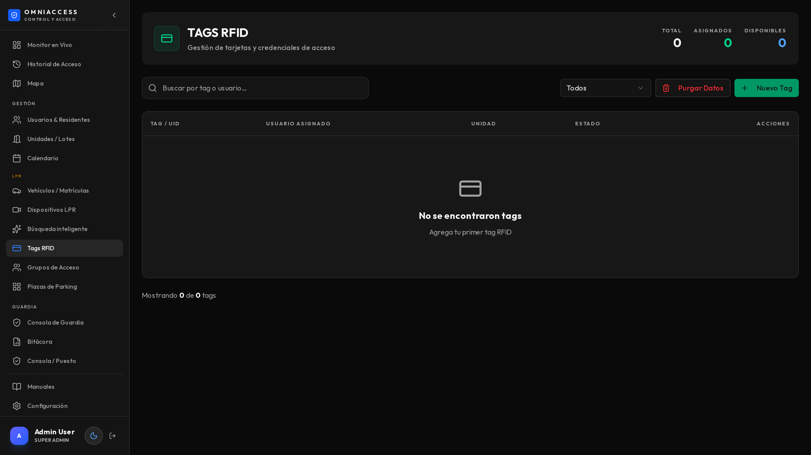
Para instalaciones con lectores de proximidad. Cada tag se asocia a un usuario igual que una matrícula, y se le aplican los mismos grupos de acceso.
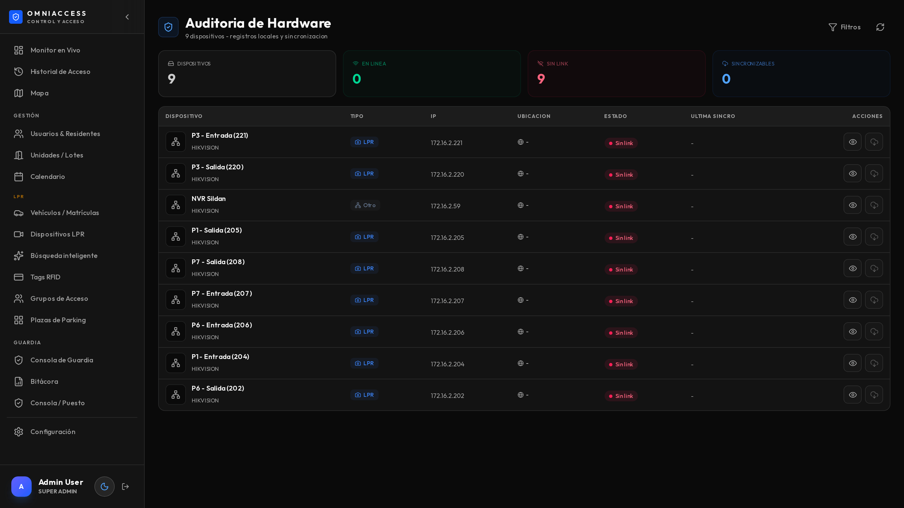
Registra quién hizo qué en el panel: altas, bajas, cambios de configuración, apertura manual de portones. Cada entrada tiene usuario, fecha, acción y detalle.
Es lo que se revisa cuando hay que responder "¿quién autorizó este vehículo?" o "¿quién cambió este horario?". No se puede borrar desde el panel.
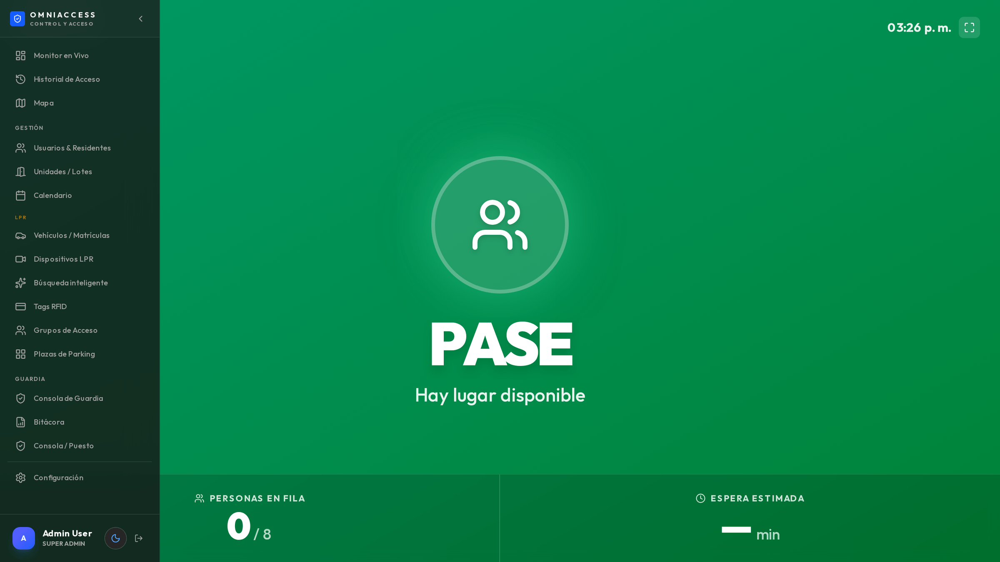
Permite armar vistas para televisores del predio: la última matrícula leída, el estado de las plazas, o un tablero de estadísticas. Se configuran acá y se abren en el navegador del TV.
entradas denegadas anoche.